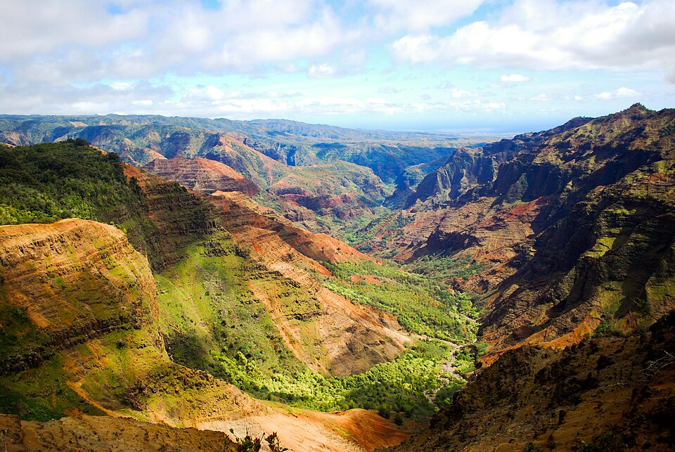

Waimea Canyon
Place: Waimea Canyon, Kauaʻi
Type: Canyon / geological landmark / watershed
Story it tells: A canyon named for its reddish waters, where volcanic collapse, millions of years of erosion, and centuries of Native Hawaiian stewardship created one of Hawaiʻi's most remarkable landscapes.

Waimea Canyon stretches across Kauaʻi's west side for roughly fourteen miles, reaching nearly a mile wide and plunging as much as 3,600 feet deep. Its towering cliffs display vivid bands of red, orange, brown, and green that have earned it the popular nickname "The Grand Canyon of the Pacific." Despite the comparison, Waimea formed very differently. The canyon began with the collapse of Kauaʻi's ancient shield volcano nearly four million years ago before millions of years of erosion sculpted the dramatic landscape seen today.
The canyon takes its name from the Waimea River. In Hawaiian, wai means "water" and mea means "reddish," referring to the iron-rich volcanic sediment washed from the canyon walls after heavy rains. During storms, runoff from Mount Waiʻaleʻale and the Alakaʻi Plateau carries red clay downstream, turning the river and its mouth at Waimea Bay a reddish color. The name is part of a living watershed stretching from one of the wettest places on Earth to the island's dry southwestern coast.
The canyon served as an important resource landscape for Native Hawaiians. The surrounding upland forests supplied massive koa trees used to build voyaging canoes, while skilled bird catchers harvested feathers from native forest birds for the cloaks and helmets worn by aliʻi. Mountain trails crossed the ridges, linking the Waimea lowlands with the isolated valleys of the Nā Pali Coast, and small communities occupied portions of the inner valleys where streams supported agriculture.
The waters flowing through the canyon also sustained life far downstream. Just above the canyon mouth, Native Hawaiian engineers constructed Kīkīaola, better known today as the Menehune Ditch, one of the finest examples of pre-contact hydraulic engineering in Hawaiʻi. By carefully diverting water from the Waimea River along the canyon wall, the system irrigated extensive loʻi kalo on the coastal plain below. The remarkable precision required to build the stone-lined ʻauwai gave rise to traditions that credited the work to the legendary Menehune.
The arrival of Western commerce transformed the canyon. During the sandalwood boom of the early nineteenth century, workers hauled heavy ʻiliahi logs down steep mountain trails to waiting ships anchored at Waimea Bay. As sandalwood disappeared, extensive logging removed many of the upland koa forests, while cattle, goats, and sheep stripped native vegetation from the slopes. Plantation agriculture further altered the watershed through irrigation ditches and water diversions that carried mountain streams toward sugar fields of Kekaha and Southwestern Kauaʻi .
Recognition of the canyon's importance eventually shifted priorities from extraction to conservation. In the early twentieth century, territorial officials established forest reserves to protect Kauaʻi's critical watershed, and Waimea Canyon State Park was later created to preserve the landscape while making it accessible to visitors. During the 1930s, Civilian Conservation Corps crews built many of the roads, trails, retaining walls, and facilities that still define the park today, opening the high country to travelers while helping stabilize the fragile slopes.
Today, Waimea Canyon remains one of Hawaiʻi's defining landscapes. Visitors come for its sweeping overlooks, waterfalls, hiking trails, and colorful cliffs, but the canyon tells a much deeper story. Its name preserves the reddish waters that continue to carve the valley, its forests once supplied the materials that powered Hawaiian society, and its rivers remain essential to the island below. Waimea Canyon is a reminder that Hawaiʻi's most spectacular places are inseparable from the history, language, and stewardship that have shaped them for centuries.